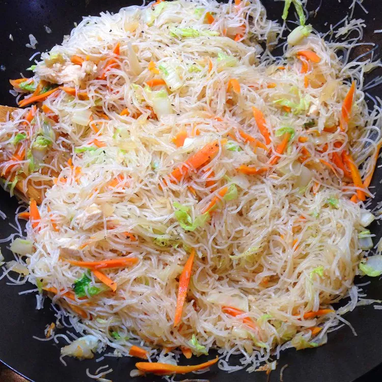

Quick & Easy Pancit

This quick pancit recipe with chicken, vegetables, and rice noodles is easy and delicious. It will remind you of island fiestas!
Ingredients
- 1 (12 ounce) package dried rice noodles
- 1 teaspoon vegetable oil
- 1 onion, finely diced
- 3 cloves garlic, minced
- 2 cups diced cooked chicken breast meat
- 1 small head cabbage, thinly sliced
- 4 carrot, thinly sliced
- ¼ cup soy sauce
- 2 lemons - cut into wedges, for garnish
Steps
- Place rice noodles in a large bowl; cover with warm water and let soften for 8 to 10 minutes. Drain and set aside.
- Meanwhile, heat oil in a wok or large skillet over medium-low heat. Add onion and garlic; cook and stir until onion is tender, about 3 to 5 minutes. Stir in chicken, cabbage, carrots, and soy sauce. Cook until cabbage begins to soften. Toss in noodles and cook, stirring constantly, until heated through.
- Transfer pancit to a serving dish and garnish with lemon wedges.
Back to main page